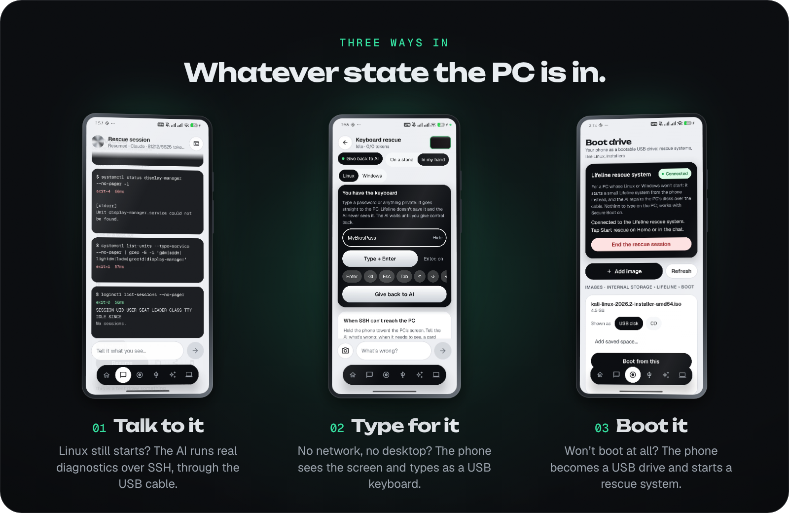
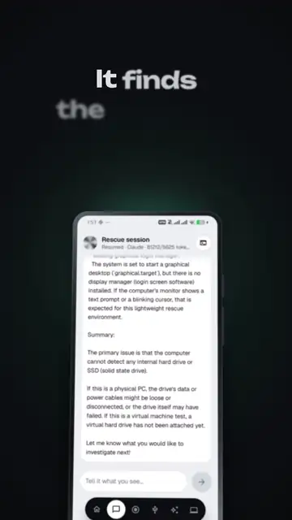

Your PC won't start. Your phone takes over.
Lifeline is a free, open-source Android app that rescues broken computers over one USB cable. The AI you already pay for finds what's wrong and explains it in plain words, and nothing changes without your OK.
How does Lifeline get into a broken PC?
Three ways, whatever state the PC is in. Plug the phone in and pick the one that fits; Lifeline only shows what your phone can do.

Talk to it over SSH
Linux still starts? One tap sets up SSH through the USB cable, even with a VPN on, and the AI runs real diagnostics: logs, services, drivers, disks.
Type for it as a keyboard
Stuck in the BIOS, GRUB, Windows recovery or a black console? The phone becomes a USB keyboard and the AI sees the screen through the camera.
Boot it from the phone
Nothing starts at all? The phone becomes a USB drive with any ISO, or Lifeline's own rescue system, which works with Secure Boot on.
Nothing changes without your OK
The AI looks first and touches nothing. Read-only commands run on their own; everything else waits for you.
- Every change is a card with the evidence, the exact command, what it does and whether it can be undone.
- Destructive steps need you to type DELETE. Formatting, partitioning and bootloader or firmware writes are never run.
- Checked afterwards: the AI verifies the fix worked and tells you in plain words.
- Passwords stay yours. You type them yourself; the AI never sees them, and secrets are removed before anything reaches it.
- No door left open: Remove from this laptop takes the phone's access back and undoes only what Lifeline changed.

Bring your own AI
Sign in to the Claude, ChatGPT or Gemini subscription you already have. Their official command-line tools run inside Lifeline with your own account, and Lifeline never sees your password. Prefer an API key? Claude, OpenAI, Gemini and DeepSeek work too. Lifeline never switches providers or falls back to a paid API on its own.
Get started
- Install the APK from GitHub Releases and allow root access.
- Pick an AI brain in the AI tab.
- Plug the phone into the PC.
- Tap Set up everything for SSH, or choose Keyboard rescue, Type on PC, USB serial or Boot drive.
- A rooted Android 10+ phoneKernelSU, Magisk or APatch, and a USB cable.
- For keyboard rescue and Type on PCA phone kernel with USB keyboard (HID gadget) support.
- For booting the PCA phone kernel that can act as a USB drive. The rescue system runs on 64-bit PCs, Secure Boot on or off.
- For SSH rescueA Linux PC. Keyboard rescue works with any PC.
- An AIA Claude, ChatGPT or Gemini subscription, or an API key.
Questions
How do I fix a computer that won't boot if I don't have another computer?
Use your Android phone. Lifeline connects to the broken PC with one USB cable and lets an AI diagnose it: over SSH if Linux still starts, as a USB keyboard that sees the screen through the phone's camera if it doesn't, or by booting the PC from the phone. It needs a rooted Android 10+ phone.
Can I boot a PC from my Android phone?
Yes. The Boot tab makes the phone show up as a USB disk or CD with any ISO you pick (Ubuntu, Kali, Linux Mint, Windows installers), with optional saved space for live systems. If you've used DriveDroid, it works the same way. Lifeline also has its own rescue system, which boots with Secure Boot on and connects back to the phone so the AI can repair the PC. The phone's kernel must support USB mass storage.
Can an AI fix my Linux PC, for example a black screen after an update?
The AI runs real read-only diagnostics on the PC (logs, services, the display manager, drivers, disks), explains the cause in plain words, then proposes a fix. Every change shows the evidence and the exact command and runs only after you approve it, and the AI checks afterwards that it worked.
Can my phone act as a USB keyboard for the BIOS or GRUB?
Yes, on phones whose kernel supports the USB HID gadget. Lifeline can tap F2, F12, Del or Esc for you while the PC powers on, type text and key combos, and in keyboard rescue the AI types for you while watching the screen through the camera. You type passwords yourself through Take control; the AI never sees them.
Which AI does Lifeline use?
The one you already pay for: your Claude, ChatGPT or Gemini subscription, signed in with your own account, or a Claude, OpenAI, Gemini or DeepSeek API key.
Does Lifeline need root?
Yes: a rooted Android 10 or later phone with KernelSU, Magisk or APatch. Root lets Lifeline turn on USB tethering, act as a USB keyboard or drive, and route around a VPN. It checks what your kernel supports and hides what it can't do.
Is Lifeline free?
Yes. Lifeline is free and open source under the Apache License 2.0.
Will the AI change my computer without asking?
No. Read-only commands run on their own; everything else waits for your approval, destructive steps need you to type DELETE, and disk formatting, partitioning and bootloader or firmware writes are never run.